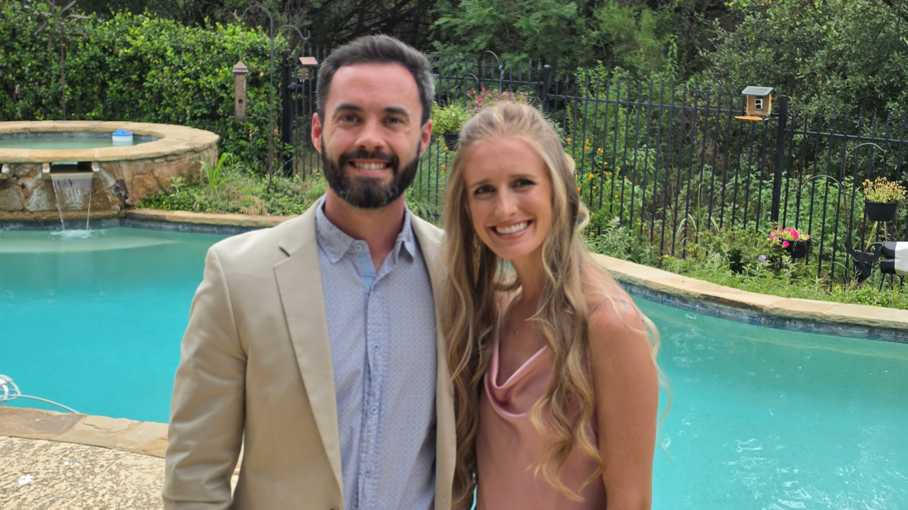

Master of Arts in Christian Leadership · Dallas Theological Seminary
Associate Pastor at One Mission Bible Church

I was born in North Carolina, but moved to Texas at three months old. I was raised in Austin, and started following Jesus in 8th grade after seeing the gospel in the way God restored a broken relationship between my parents. God placed some incredible mentors in my life shortly after to help me develop a love for Jesus and His church.
I graduated from Texas A&M University in 2019, where I studied Computer Science. I started my first job as a Software Engineer at Charles Schwab, but four months into my job had a radical calling from God to leave a career in technology to work in church ministry. Two and a half years later, I started working at Hill Country Bible Church as a Student Pastor, where I served for four years, and then joined the team that started One Mission Bible Church.
My wife Elise and I got married in January of 2020, and although Elise went to UT, we're raising two future Aggies, Elliot and Emory.
I am passionate about seeing the Word of God transform individuals and families. It's a joy to see this happen through intentional disciple-making and environments where I get to teach God's Word. I love seeing the light bulbs go off as people understand Scripture and how it guides their life. The greatest adventure in life is to hear what God is saying to us through His Word and then do what He says.
This portfolio documents the lessons I've learned throughout my ministry residency at One Mission Bible Church. It brings together artifacts from my ministry and personal life alongside my reflections on what they taught me, tracing my growth in Christian Leadership, Communication, and Cultural Engagement. It also highlights my Ministry Distinctive — the area of ministry I devoted my elective hours toward exploring more deeply.
[Placeholder] Definition of value, SMART goals, artifacts, and reflective statements.
View Page →[Placeholder] Definition of value, SMART goals, artifacts, and reflective statements.
View Page →[Placeholder] Definition of value, SMART goals, artifacts, and reflective statements.
View Page →[Placeholder] Definition of degree/focus, artifacts, and reflective statements.
View Page →